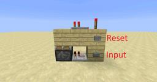

Redstone is een puzzel van tientallen verschillende compenents/items die samen werken om een actie uit te voeren.
Logic gates
Een logic gate kan worden bedacht als een simpel apparaat dat een of meerdere invoeren heeft en een uitvoer geeft besloten middels de regels dat de logic gate volgt. Bijvoorbeeld als beide invoeren aan een AND gate in de aan-stand zijn is zal de gate een aan staat uitvoer geven.